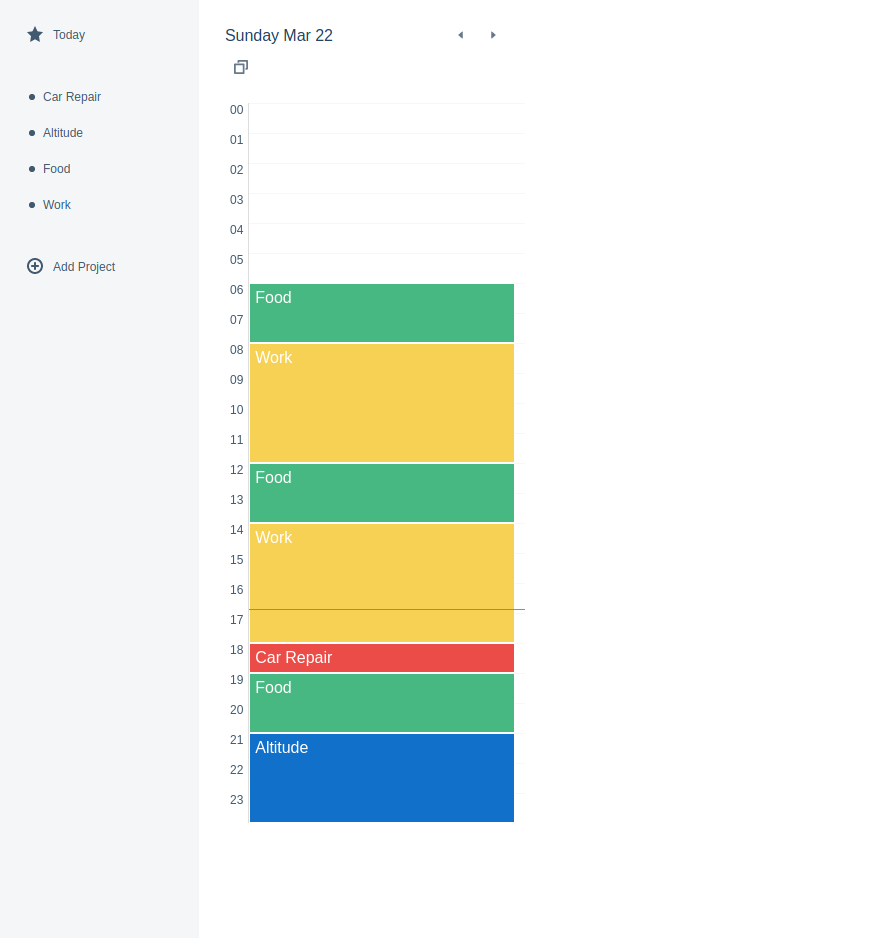
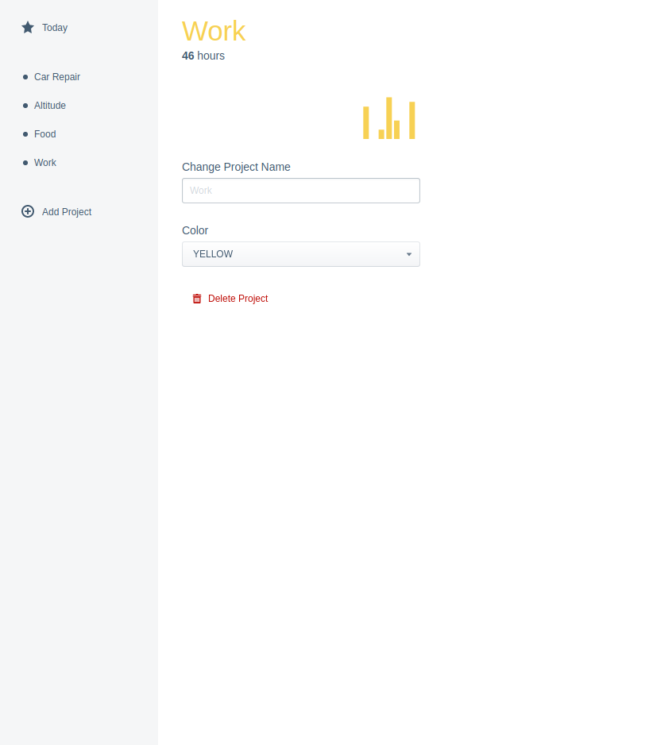

Altitude is a time-budgeting app making you more productive.Github »
In this project I used React, Redux and Electron. After starting this project in Angular, I changed my path to React. I found Angular to be too rigid and I got to a point where I couldn't add anything except the most simple actions. I tried Redux, I would recommend not using it to start a new project. It adds more complexity while not offsetting the benefits.
Electron was an interesting test and I would use it in the future. It is great to have the same environment over all operating systems and writing in HTML, CSS and JavaScript
